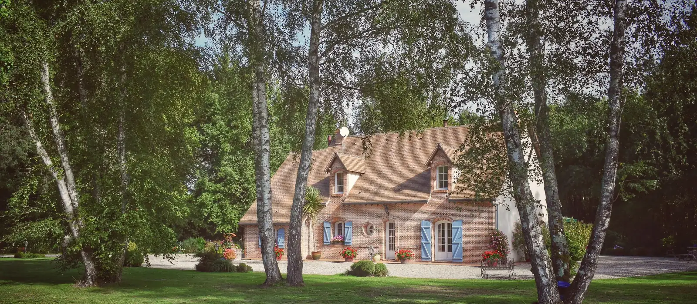

Élagage et taille douce
Réduction de couronne et éclaircissage sur les sujets de jardin, souvent des pins et des chênes sur cette commune.
LCC Espaces Verts a son siège 1 avenue de Bellevue, à Mérignac. La commune est donc notre terrain le plus proche, du Burck à Beutre en passant par Capeyron et Arlac. Nous y traitons aussi bien les pins maritimes des quartiers pavillonnaires que les chênes des parcs privés. Le devis est gratuit et remis après une visite sur place.

Photo d'illustrationToutes nos prestations sont disponibles sur la commune, sans frais de déplacement.
Réduction de couronne et éclaircissage sur les sujets de jardin, souvent des pins et des chênes sur cette commune.
Abattage direct quand la parcelle offre une aire de chute dégagée, après examen de l'état sanitaire.
Démontage par sections dans les lotissements où les maisons sont proches les unes des autres.
Rognage de souche sous le niveau du sol, pour replanter ou remettre le terrain en pelouse.
Entretien annuel et remise en forme des haies de séparation, fréquentes dans les quartiers pavillonnaires.
Sécurisation d'une branche suspendue ou d'un arbre penché après un coup de vent.
Voir aussi le débroussaillage, les soins et le diagnostic et l'évacuation des déchets verts.
Mérignac
Mérignac
[[À CONFIRMER : détail réel de ces deux chantiers, quartier, essence, hauteur et durée]]
Mérignac accueille l'aéroport de Bordeaux-Mérignac sur son territoire. Des servitudes aéronautiques de dégagement s'appliquent dans les secteurs situés sous les trajectoires. Elles peuvent limiter la hauteur des arbres et imposer un entretien plus suivi que dans une commune voisine.
Les sols de l'ouest bordelais sont sableux et filtrants. Le pin maritime s'y est largement installé, dans les jardins comme en limite de parcelle. Ce résineux monte vite et se déracine plus facilement qu'un feuillu sur terrain gorgé d'eau. Un pin penché après une période pluvieuse mérite un examen rapide.
La commune conserve aussi de grands parcs arborés, dont le parc du château de Bourran. Ces ensembles anciens abritent des sujets de belle dimension. Dans les jardins voisins, on retrouve les mêmes essences, chênes et cèdres, avec les mêmes contraintes de hauteur.
Une partie du tissu pavillonnaire s'est construite sur des parcelles étroites. L'aire de chute nécessaire à un abattage direct y est rarement disponible. Le démontage par sections devient alors la seule méthode praticable.
[[À CONFIRMER : périmètre exact des servitudes aéronautiques et arbres protégés au plan local d'urbanisme de Bordeaux Métropole sur Mérignac]]
Vérifiez si votre parcelle est concernée par un espace boisé classé ou par une protection au plan local d'urbanisme. Le service urbanisme de la mairie renseigne sur ce point.
[[À CONFIRMER : coordonnées du service urbanisme de Mérignac]]
L'entreprise est installée 1 avenue de Bellevue, sur la commune. Le déplacement est donc immédiat, sans frais de route à prévoir. Pour un arbre menaçant, appelez le 06 41 59 80 54.
Mérignac relève du plan local d'urbanisme intercommunal de Bordeaux Métropole. Certains arbres et alignements y sont protégés, et un espace boisé classé impose une déclaration préalable. Vérifiez le statut de votre parcelle auprès du service urbanisme avant les travaux.
L'aéroport de Bordeaux-Mérignac est implanté sur la commune. Des servitudes aéronautiques de dégagement s'appliquent dans les secteurs situés sous les trajectoires. Elles peuvent limiter la hauteur des plantations et imposer un entretien régulier.
[[À CONFIRMER : périmètre exact de ces servitudes]]
Mérignac partage sa limite ouest et sa limite sud avec ces deux communes, où nous intervenons également.
La page des zones d'intervention réunit l'ensemble des communes couvertes au départ de Mérignac.
Pour une urgence, appelez directement. Le téléphone reste le moyen le plus rapide.